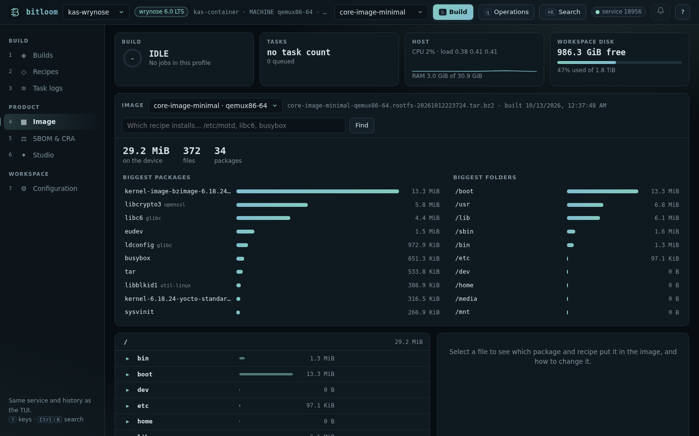
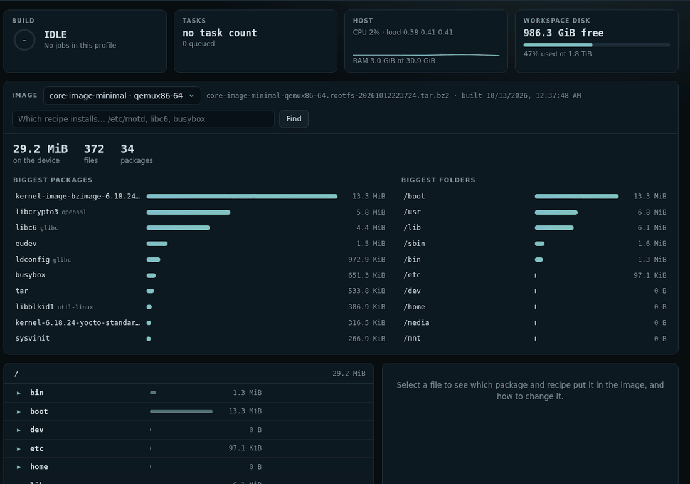

Image explorer
What did the build actually put on the device, where does each file come from, and how do you change it? The Image explorer answers from what BitBake left on disk after the build: no BitBake run, no device needed.
Open it with section 4 of the web dashboard, Ctrl+K → Explore the built image, or ask Which recipe installs… from anywhere (web, TUI, command line).
Screenshot The Image explorer on a real Wrynose core-image-minimal

What you see#
- The image of the active profile: every image built for every machine, newest first. Bitloom reads the root filesystem archive in
tmp/deploy/images/<machine>(tar.bz2,tar.gz,tar.xz, ortar.zstwhenzstdis installed), or therootfsfolder intmp/workwhile it still exists (withoutrm_work). Add a tar type toIMAGE_FSTYPESif your image only produces disk images. - Totals: the size on the device, the number of files and of packages.
- Biggest packages and biggest folders: where the space goes. Click a package to see which recipe builds it; click a folder to open it.
- The file tree, folder by folder, each entry with its size, a bar relative to the folder, and the package · recipe that installs it. Symbolic links show their target.
- The selected file: size, permissions, the package and recipe, the layer (yours or upstream), the images that contain it and what pulls it in (the packages that depend on it, such as
packagegroup-core-boot), the existing.bbappendfiles of that recipe, and the content when it is a small text file.
Change it#
Under the file, Bitloom says what to do:
- the recipe comes from an upstream layer (Poky, OE-Core, meta-yocto…): never edit it there. Change it with an append opens Studio on a Recipe append already filled in: the recipe, its folder (
recipes-core…) and, for a file in/etc, the file itself, starting from its current content on the device. Edit it with edit before creating, review, create, rebuild; - your layer already appends that recipe: change your append;
- the recipe is in your layer: edit the recipe.
Some files are in no package: /etc/passwd, /etc/group, /etc/shadow, /etc/ld.so.cache… They are made while the image is assembled, by useradd, ldconfig, package post-install scripts or the image recipe's ROOTFS_POSTPROCESS_COMMAND. Bitloom says so and points to where to change them (for example EXTRA_USERS_PARAMS in the image recipe for users).
Animation From the image to the append that changes /etc/motd

Which recipe installs…?#
Type a file on the device (/etc/motd), a package as installed (libc6) or a recipe (glibc) in the Image view's search, the Ctrl+K palette, the TUI's Analysis → Which recipe installs…, or on the command line:
$ bitloom --who-installs /etc/inittab
WHICH RECIPE INSTALLS: /etc/inittab
sysvinit-inittab (sysvinit-inittab) ships this file
recipe sysvinit-inittab 2.88dsf …/meta/recipes-core/sysvinit/sysvinit-inittab_2.88dsf.bb
layer meta (upstream)
file /etc/inittab
image core-image-minimal (qemux86-64) pulled in by sysvinit
change add recipes-core/sysvinit-inittab/sysvinit-inittab_%.bbappend to your layer (Studio → Recipe append)
It is the same information as oe-pkgdata-util find-path and lookup-recipe, plus the layer, the images, the dependants and the advice, read from tmp/pkgdata/<machine>/runtime and the image manifests. Package renames are followed (libc6 is the glibc package). A file name without a path (inittab) also works. It answers for what has been packaged: build the recipe or the image once first.
Practical limits#
- Ownership comes from package data (
FILES_INFO); files created at image assembly time have no package, as explained above. - Disk images (
ext4,wic) are not opened: Bitloom needs a tar archive or the rootfs folder. - Very large images take a few seconds the first time (the archive is read once, then cached until it changes).
- The TUI offers Which recipe installs… in Analysis and the rootfs inventory in Artifacts (
i); the folder-by-folder explorer is in the web dashboard.